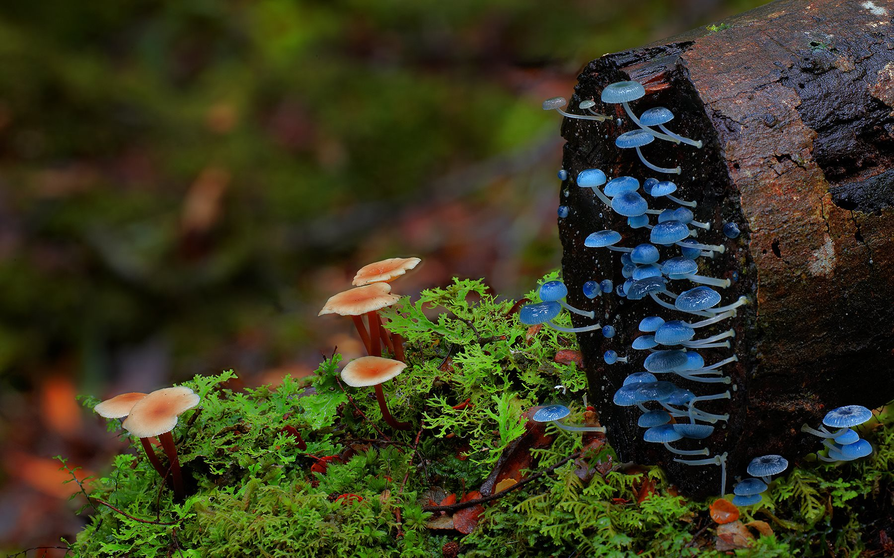
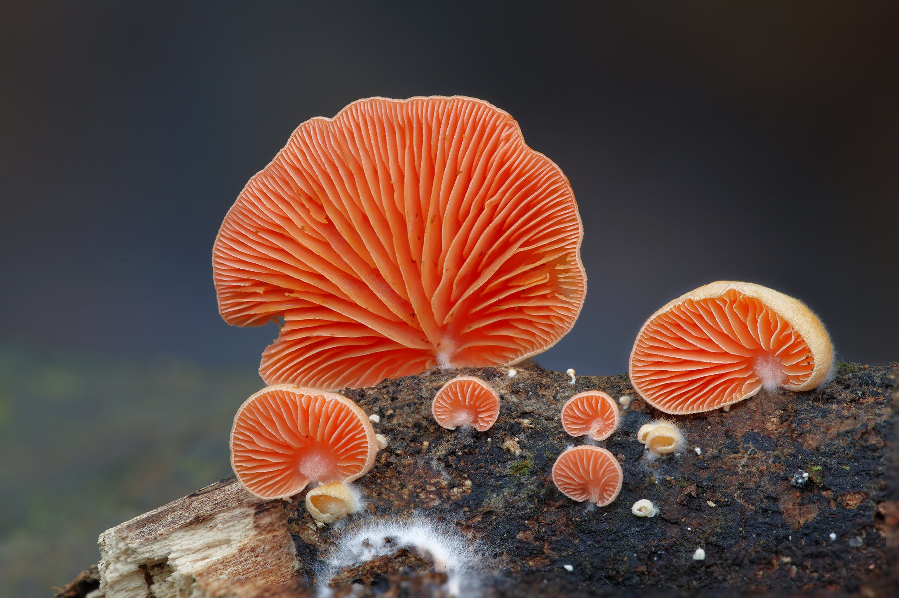
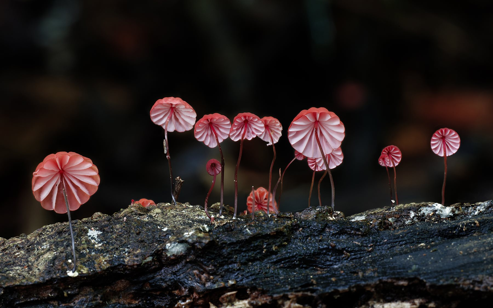
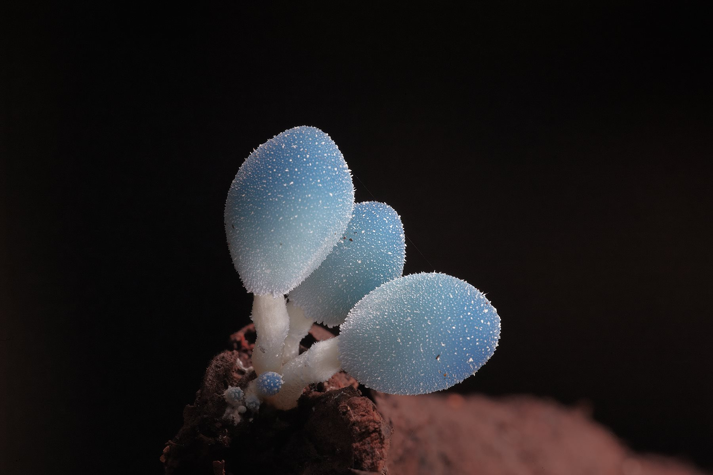
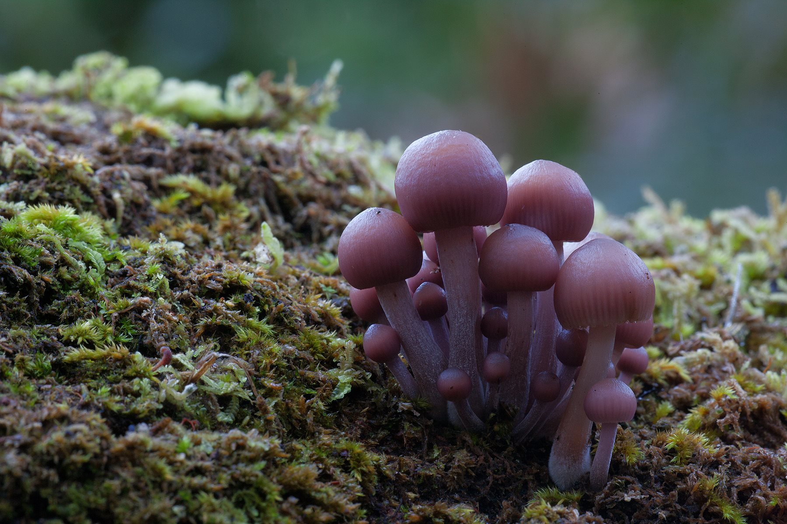

Hongos habitantes de otro reino






Sumérgete en el Reino Fungi, explorando sus características, desde microscópicas levaduras hasta majestuosos basidiomicetos. Descubre cómo estos hongos desempeñan roles cruciales en ecología y aplicaciones variadas, desde alimentos hasta medicamentos.